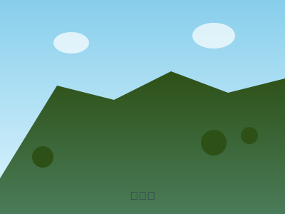

高尾山（たかおさん）
東京都八王子市 | 標高599m | 初心者向け

高尾山登山ガイド
🗻 山の概要
高尾山は東京都八王子市にある標高599mの山で、都心からのアクセスが良く、初心者や家族連れに最も人気の低山です。ケーブルカーやリフトが利用でき、様々なコースがあるため、体力や時間に合わせて登山を楽しめます。
📍 基本情報
- 所在地: 東京都八王子市高尾町
- 標高: 599m
- 難易度: 初級（★☆☆）
- 登山時間: 往復2-4時間（コースにより異なる）
- 最適シーズン: 通年（紅葉は11月中旬〜下旬）
🚌 アクセス
電車でのアクセス（推奨）
- 京王線「高尾山口駅」下車徒歩すぐ
- JR中央線「高尾駅」から京王線に乗り換え
- 新宿から約1時間
車でのアクセス
- 中央自動車道「八王子IC」から約30分
- 駐車場有り（有料・混雑時は満車の可能性）
🥾 登山コース
1. 1号路（表参道コース）
- 距離: 約3.8km（往復）
- 所要時間: 上り90分、下り70分
- 特徴: 最もポピュラーで歩きやすい舗装路
- 見どころ: 薬王院、天狗の腰掛杉
2. 稲荷山コース（6号路）
- 距離: 約3.1km（往復）
- 所要時間: 上り90分、下り70分
- 特徴: 自然豊かな山道、展望良好
- 見どころ: 稲荷山展望台
🚡 ケーブルカー・リフト
- ケーブルカー: 清滝駅〜高尾山駅（約6分）
- リフト: 山麓駅〜山上駅（約12分）
- 料金: 大人往復1,000円程度
- 運行時間: 8:00〜17:30頃（季節により変動）
⛅ 季節の魅力
春（3-5月）
桜やミツバツツジが美しく咲き誇ります。新緑も清々しく、ハイキングに最適な季節です。
夏（6-8月）
緑豊かで涼しく、暑さを避けたい方におすすめ。ビアマウントも開催されます。
秋（9-11月）
関東屈指の紅葉スポット。11月中旬から下旬が見頃で、多くの観光客で賑わいます。
冬（12-2月）
空気が澄んで富士山が美しく見えます。雪化粧した山容も格別です。
🎒 必要な装備
基本装備
- 歩きやすい靴（スニーカーでも可）
- 動きやすい服装
- リュックサック
- 飲み物（500ml以上推奨）
- 雨具（折りたたみ傘・レインウェア）
あると便利
- トレッキングポール
- タオル
- 行動食（チョコレート等）
- カメラ
- 防寒着（冬季）
⚠️ 安全に楽しむための注意点
- 混雑対策: 土日祝日や紅葉シーズンは非常に混雑します
- 天候確認: 出発前に必ず天気予報をチェック
- 時間に余裕を: 最終のケーブルカー・リフトの時間を確認
- 体調管理: 無理のないペースで歩きましょう
- マナー: 自然保護とゴミの持ち帰りを心がけて
🍽️ 山頂グルメ
高尾山には山頂付近に茶屋や売店があり、名物のとろろそばや天狗焼きを楽しめます。薬王院周辺にも甘味処があり、登山の疲れを癒してくれます。
📝 初心者へのアドバイス
- 初回はケーブルカーやリフトの利用がおすすめ
- 1号路から始めて、慣れたら他のコースにチャレンジ
- 平日の訪問で混雑を避ける
- 薬王院での参拝も楽しみの一つ
- 下山後は高尾山温泉で疲れを癒すのもおすすめ